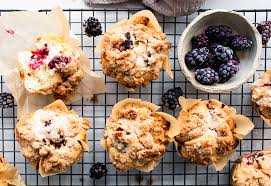
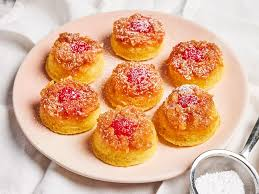
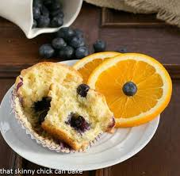

April Specials
Blackberry Crumble
Soft, moist muffins bursting with juicy blackberries and topped with a buttery, gold crumble. The combination of tart berries and sweet, crunchy topping makes them a delicious treat perfect for breakfast or a snack.
Pineapple Upside Down
A mini version of the classic dessert, featuring caramelized pineapple slices and cherries baked into the bottom of each muffin. Moist, buttery, and bursting with tropical flavor, these muffins make a delightful breakfast treat or dessert.
Orange Zucchini
A moist, flavorful baked treat that blend fresh, citrusy brightness of orange with the subtle sweetness of shredded zucchini. These muffins are spiced with a hint of nutmeg and cinnamon.
Blueberry Orange
Soft, citrusy treats bursting with juicy blueberries and infused with the bright, refreshing flavor of orange zest and juice. Perfectly balanced between sweet and tangy, these muffins make a vibrant and uplifting addition to breakfast or brunch.
